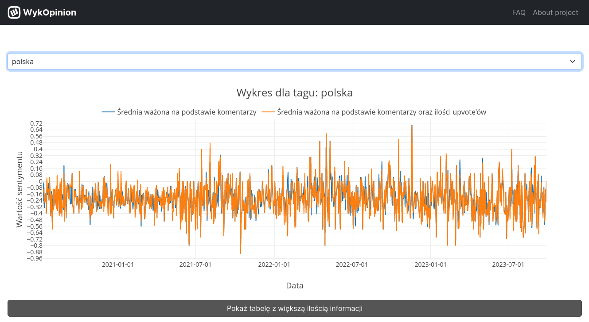
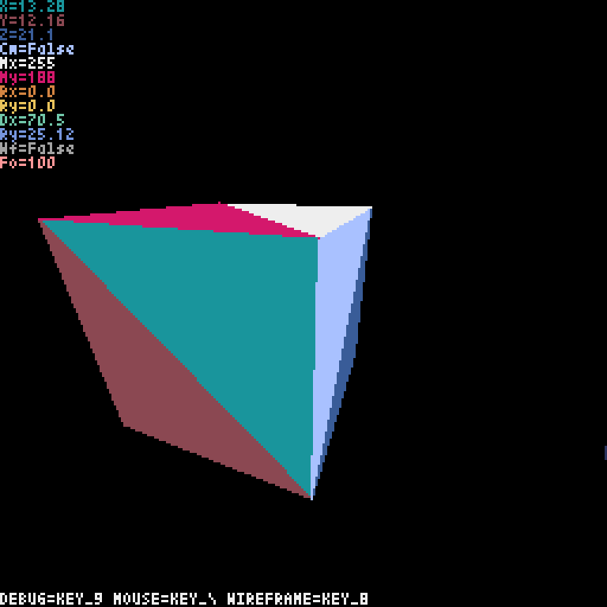

Home
Cool Stuff
Projects
Terminal speechbubble maker
Pretty simple python app, intended for Termux, that just got unmaintainable
due to many, many ad-hoc fixes.
In the end, I got stuck on implementing a nice looking speechbubble, and
just decided to archive the project, indefinitely. Coincidentally, the trend
also died down already, so I'm probably not returning to it.
As can be seen, not only is the usability bad due to very limited resolution
of terminal displays, but the end result is less asthetically pleasing than
commonly found alternatves - even though the user can adjust speechbubble
height and pointer position, the bubble isn't pretty.
Wykopinion.com
Some context: In Poland, there's a social media website called Wykop. It's
similar to 4chan - excluding (in)famous /b/ or /pol/ - and it has a pretty
similar reach locally. It also has a microblogging section. I never used the
website.
Wykop's sentiment analyzer. Originally, we had no idea what we should choose
as a project, but our professor suggested that we should perhaps try and
create some sort of sentiment analyzer, possibly for Wykop. So, that's what
we did. I worked on the backend, and the rest of my team worked on the
frontend.
The pipeline went more or less like that:
👉 Spoof a new token
👉 Get new data for selected tags
👉 Process the data

Much graph, very cool
And after all that, whenever someone visits the website, they can look at a
nice graph. To be absolutely honest, I think it's a terrible source of any
information. I wouldn't recommend it as a tool. But, it was a great
experience. Working to make it, well, sorta work. Finishing parsing data backlog
very close to deadline. Hapiness from being done with it, but also a feeling
of "I could've made it better". In the end, it's done.
Python 3D engine
Picture this:
- Python, one of the slowest languages.
- Pyxel, a Python framework for PICO-8-inspired video game programming.
And now try to make a 3D video game engine on top of it. With rasterization. No scanlines, no ray casting, just your average OpenGL rendering pipeline.
That being said, it was also an extremely interesting and educative experience. Pretty much the only reason it's now sitting at the backburner is me not feeling inspired enough to do something (3D game engine) that was done many, many times before. Also the energy drain of debugging minor issues, and having to come up with algorithmic solutions yourself is tremendous. The final nail in the coffin was the need to implement the rasterization part of the pipeline, also with custom shaders and all. It didn't fall victim to unreadable code as much as the speechbubble maker did, but having to restructure the code greatly in order to allow it to work with these new features left it in pretty much the same position, sadly. For the time being, at least.
- Python, one of the slowest languages.
- Pyxel, a Python framework for PICO-8-inspired video game programming.
And now try to make a 3D video game engine on top of it. With rasterization. No scanlines, no ray casting, just your average OpenGL rendering pipeline.
... yeah, it's definitely the funniest thing I've done.
That being said, it was also an extremely interesting and educative experience. Pretty much the only reason it's now sitting at the backburner is me not feeling inspired enough to do something (3D game engine) that was done many, many times before. Also the energy drain of debugging minor issues, and having to come up with algorithmic solutions yourself is tremendous. The final nail in the coffin was the need to implement the rasterization part of the pipeline, also with custom shaders and all. It didn't fall victim to unreadable code as much as the speechbubble maker did, but having to restructure the code greatly in order to allow it to work with these new features left it in pretty much the same position, sadly. For the time being, at least.

While the face culling (and, not seen here, clipping) are implemented,
custom shaders and z-clipping are not. Rasterization overall just doesn't
exist, and while the pipeline stops just before it, doing it would require a
lot of additional work in earlier stages.
This website!
That's right, this website is also being made by me, with it's code on
GitHub!
This is my first forray into frontend development, and in the end I decided
to go with the easiest path possible:
- Flask. I know it from a previous web project I was working on. Also Python, which I'm quite fond of. Also also, jinja templating, which I already use in Ansible, too.
- Tailwind for CSS. While it does have some bad rep for humongous class lists, it also abstracts CSS syntax into its own, nice system. Now I only have to deal with how CSS works, and inline styling gave me a lot of flexibility in this department.
- Alpine.js for JS stuff. Another tool focused on inline work, another help with learning something I don't really know.
Overall, it's a pretty fun experience, and is one of the
things I will both finish (or have 1.0 release), and will be using after
being done with it.
Oh, and do tell me if something's broke, I don't have 10 devices to test this page on :)
Made by
SX_7